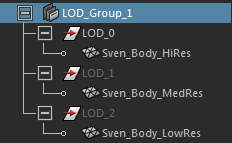
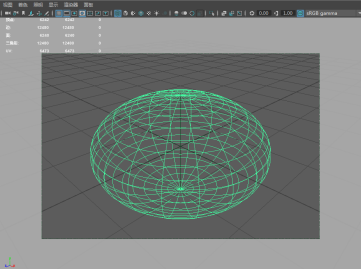

以下步骤介绍在已经具有要在不同的时间显示的各种版本的网格时，如何创建 LOD 组。如果您仅拥有高分辨率版本的网格，并且希望自动生成要显示的低分辨率版本，请参见生成 LOD 网格。
重要： 创建细节级别时请仅使用非实例化几何体。将实例化几何体添加到“细节级别”(Level of Detail)组中后，该实例化几何体将不会一致显示。
- 通过要与 LOD 组相关联的摄影机查看场景。
例如，通过主视图面板查看场景，然后从“面板 > 透视”(Panels > Perspective)或“面板 > 正交”(Panels > Orthographic)菜单中选择主游戏摄影机。
- 按顺序选择要放入 LOD 组的几何体。
首先选择分辨率最高的模型，最后选择分辨率最低的模型。默认情况下，对象会按照选择顺序指定给 LOD 级别堆栈，因此您需要将分辨率最高的模型排在第一位。
例如，依次选择 (1) Sven_Body_HiRes、(2) Sven_Body_MedRes 和 (3) Sven_Body_LowRes 后会创建以下 LOD 组：
 - 根据是否要在创建组之前编辑 LOD 选项，执行以下操作之一：
- 在“常规”(General)工具架中，单击“创建 LOD”(Create LOD) 。
- 从主菜单栏中，选择“编辑 > LOD (详细级别) > 创建组”(Edit > LOD (Level of Detail) > Create Group) >
 。
。
- （可选）如果打开了“设置 LOD 选项”(Setup Lod Options)，请确认已按所需方式设置“阈值类型”(Threshold Type)，然后单击“设置 LOD”(Setup Lod)。
默认情况下，“阈值类型”(Threshold Type)设置为“屏幕高度百分比”(Screen Height Percentage)，以便根据当前摄影机帧中的整个 LOD 组占据的屏幕高度百分比显示级别。“屏幕高度百分比”(Screen Height Percentage)测量 LOD 组中所有网格相对于当前摄影机帧的总体高度，并为要显示的每个级别建立初始默认百分比。稍后，您可以自行编辑这些阈值。请参见编辑 LOD 阈值。
提示： 要更好地可视化 LOD 组的屏幕高度百分比，您可以在面板工具栏中启用“胶片门”(Film Gate) 和“门遮罩”(Gate Mask) 。（或者，从面板菜单中选择“视图 > 摄影机设置 > 胶片门”(View > Camera Settings > Film Gate)和“视图 > 摄影机设置 > 门遮罩”(View > Camera Settings > Gate Mask)。）这将在场景中创建 LOD 组，并根据摄影机视图在场景中隐藏所有级别（除一个级别之外）。
- （可选）打开大纲视图，以在场景层次中查看 LOD 组。
展开每个 LOD_n 子组，以查看一个或多个关联网格。